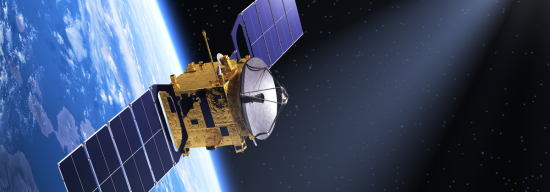

Conference Tracks
 Applications of AI in Computing
Applications of AI in Computing
- Machine Learning and Deep Learning Innovations
- Natural Language Processing Applications
- AI in Cybersecurity
- Ethics and Fairness in AI
- AI for Fog Computing
- AI in Cloud Computing
- AI for Edge Computing
- Reinforcement Learning Techniques
- Computer Vision and Image Processing
- Explainable AI (XAI)
- AI for IIoT (Industrial Internet of Things)
- Data Privacy and AI
- AI-Driven Software Engineering
- AI in Robotics and Automation
- Augmented Reality and AI
- AI for Predictive Analytics
- AI in Healthcare Computing
- Quantum Computing and AI
- AI for Resource Optimization
AI applications in UAV Networks
- AI enabled UAV applications in Autonomous Navigation and Flight Control
- Computer Vision Techniques for Smart UAVs
- AI-Enhanced Object Detection and Tracking
- Swarm Intelligence and Cooperative UAV Systems
- Machine Learning for Environmental Monitoring
- AI enabled UAV Applications in Precision Agriculture
- Data Processing and Analysis for UAV Imagery
- Ethics and Regulations in UAV AI Applications
- UAVs in Search and Rescue Operations
- Security Challenges in UAV Operations and AI Solutions
- New opportunities/challenges/use cases for UAV-enabled IoT
- UAV swarming and coordination for IoT deployments
- UAV-assisted data collection and analytics for IoT applications
- Protocols and architectures for UAV-enabled MEC
- Computation offloading for UAV-enabled MEC
- UAV’s trajectory design for UAV-enabled IoT
- Spectrum management and multiple access schemes for UAV-enabled IoT
- Green energy powered UAV-enabled IoT networks
- MIMO/massive MIMO/millimeter wave technologies for UAV-enabled IoT
- Quality of Service provisioning for UAV-enabled IoT
- Network security and information assurance for UAV-enabled IoT

AI in Astronomy
- Machine Learning for Astrophysical Data Analysis
- Deep Learning in Image Processing for Astronomy
- AI for Exoplanet Detection and Characterization
- Time Series Analysis of Astronomical Data
- AI in Telescope Automation and Control
- Big Data Challenges in Astronomy
- AI-Driven Simulations of Cosmic Phenomena
- Neural Networks for Galaxy Classification
- AI Applications in Radio Astronomy
- Machine Learning for Gravitational Wave Detection
- Predictive Modeling of Stellar Evolution
- Data Mining Techniques for Large Astronomical Surveys
- AI for Cosmological Simulations and Modeling
- Natural Language Processing in Astronomy Research
- AI in Space Mission Planning and Operations
- Anomaly Detection in Astronomical Observations
- AI for Multi-Messenger Astronomy
- Visualization Techniques for AI-Generated Astronomical Data
- AI Ethics and Fairness in Astronomy Research
- Future Trends: Quantum Computing and AI in Astronomy
 AI in Renewable Energy
AI in Renewable Energy
- Machine Learning for Renewable Energy Forecasting
- AI in Smart Grid Management and Optimization
- Predictive Maintenance for Renewable Energy Systems
- AI-Driven Energy Storage Solutions
- Data Analytics for Solar Energy Performance
- Wind Energy Prediction and Optimization using AI
- AI in Electric Vehicle Integration with Renewable Energy
- Decentralized Energy Management using Blockchain and AI
- AI for Energy Demand Response Strategies
- Computer Vision for Solar Panel Inspection
- Optimizing Energy Efficiency in Buildings with AI
- Green energy technologies
- AI in Hydropower Generation and Management
- Artificial Intelligence for Renewable Energy Microgrids
- Environmental Impact Assessment using AI Techniques
- Integration of AI in Climate Change Mitigation Strategies
- AI and IoT for Enhanced Energy Monitoring Systems
- Smart Renewable Energy System Design with AI
- Data-Driven Policy Making in Renewable Energy
- Future Trends: AI and Next-Generation Renewable Technologies
Best Student Paper Award
There will be three (3) best student paper awards in three different tracks. A paper will be considered a student paper if all the authors are students only. Otherwise, a full registration fee is applicable.
To download the detailed Conference Tracks, click below
Download Conference Tracks